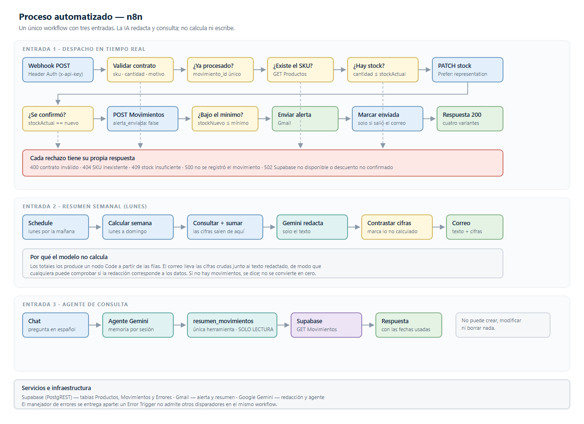

SECCIÓNEl problema
DIAGRAMAProceso manual
FOLIO03
Así se hace hoy

Alerta automática de inventario03
Un despacho actualiza el stock y avisa por su cuenta, en el momento en que un producto cruza su mínimo.
En la bodega, el stock baja cada vez que sale mercancía, pero nadie mira la tabla hasta que alguien pide un producto y no hay. Para entonces la venta ya se perdió y el pedido de reposición llega tarde.
El mínimo ya existía en la tabla desde el principio. Lo que faltaba no era el dato, sino alguien que lo mirara a tiempo.
ANOTACIÓN DEL EQUIPO
La entrega exige un solo workflow sin referencias a otros. Los cinco que teníamos se fusionaron en uno, y las tres formas de entrar conviven en el mismo lienzo.
62 nodos, ningún executeWorkflow, ninguna referencia colgando. El manejador de errores va aparte porque un Error Trigger no admite otros disparadores: lo entregamos como anexo y lo decimos.
| Servicio | Para qué | Cómo se conecta |
|---|---|---|
| Supabase | Productos, movimientos y errores | PostgREST sobre HTTP. El PATCH pide Prefer: return=representation para poder comprobar que el descuento ocurrió de verdad, no solo que la petición no falló. |
| Gmail | Alerta y resumen | OAuth2. El envío puede fallar sin tumbar el despacho: se responde 200 con avisoPendiente en true. |
| Google Gemini | Redacción y agente | gemini-3.5-flash-lite. Redacta el resumen y conversa; no calcula ninguna cifra. |
La consulta previa tiene dos capas. responde rápido, pero lo que de verdad impide el doble descuento es la restricción unique sobre movimiento_id en la base de datos. Si dos peticiones idénticas llegan a la vez, la consulta previa puede no verlas; Postgres sí.
Los totales los produce un nodo Code a partir de las filas devueltas. El modelo recibe esas cifras ya calculadas y escribe el texto.
El correo lleva las cifras crudas junto al párrafo redactado, de modo que cualquiera puede comprobar si la redacción corresponde a los datos. Si no hubo movimientos, se dice que no los hubo: no se convierte en un cero.
El resumen semanal es una cadena: entrada fija, salida fija. La consulta no, porque el usuario decide el periodo al preguntar. El agente tiene una sola herramienta, y es de lectura.
Que el agente se niegue a escribir es una instrucción. Que no pueda escribir es la arquitectura. Si el mensaje de sistema fallara, seguiría sin tener nada que invocar para hacerlo.
ANOTACIÓN DEL EQUIPO| # | Lo que hizo el flujo | Por qué en ese orden |
|---|---|---|
| 1 | Descontó el stock | Y comprobó en la respuesta que el saldo quedó en 9, no solo que la petición no falló |
| 2 | Registró el movimiento | Antes de notificar: un reenvío debe encontrar el duplicado aunque el correo falle |
| 3 | Envió el correo | Con el saldo, el mínimo y quién despachó |
| 4 | Marcó la alerta como enviada | Después del envío real, no antes |
| 5 | Respondió 200 | Con alertaEnviada en true |
Un flujo que responde siempre 200 no deja saber qué pasó. Las once rutas terminan en una respuesta distinta según el motivo.
| Cód. | Cuándo | Por qué importa |
|---|---|---|
| 400 | Contrato inválido | Se rechaza sin tocar la base de datos |
| 404 | El SKU no existe | Distinto de «no pude consultar» |
| 409 | Stock insuficiente | Rechazo de negocio, no error técnico |
| 500 | No se pudo registrar el movimiento | El stock ya se descontó, y eso hay que saberlo |
| 502 | Supabase caído o descuento no confirmado | Cubre el servicio que responde mal y el que no responde |
El agente informó 93 movimientos y 256 unidades para la semana del 2 al 8 de noviembre. Al abrir la ejecución, la URL que realmente salió era esta:
El nodo declaraba dos parámetros con el mismo nombre, creado_en. n8n los construye como un objeto, así que el segundo pisaba al primero en silencio.
De las 93 filas devueltas, solo 35 caían dentro del periodo. La más antigua era del 20 de octubre.
Redactó con exactitud lo que el flujo le entregó. El fallo estaba aguas arriba, en la consulta.
Y venía del diseño original: el resumen semanal llevaba desde su creación reportando acumulados como si fueran de la semana.
| Qué comprobamos | Cómo lo comprobamos |
|---|---|
| Una salida de 200 con 20 en stock se rechaza con 409 y no descuenta nada | Los nodos de escritura no aparecen en la ejecución 188 |
| La rama de alerta completa: registra, envía el correo, marca la alerta y responde 200 | La ejecución 192 de punta a punta, y el correo con las cifras coincidentes |
| El movimiento se registra antes de notificar | El orden de los nodos dentro de esa misma ejecución |
| El agente se niega a escribir | La respuesta, y los logs: no invocó ninguna herramienta |
| El agente vuelve a consultar en lugar de recitar | Dos llamadas distintas, con la cifra movida en el movimiento añadido |
En ninguno damos por bueno el código de respuesta. Lo que registramos es el efecto: qué nodos corrieron, qué quedó escrito y qué llegó al correo.
| Fallo | Cómo se encontró | Estado |
|---|---|---|
| El filtro del periodo perdía el límite inferior | Contrastando la cifra contra la ejecución | Corregido |
Un Supabase inalcanzable no devolvía 502: el flujo se detenía sin responder nada | Rompiendo el host a propósito | Corregido |
| La herramienta del agente no recibía el periodo | Leyendo la ejecución del subworkflow | Corregido y comprobado |
| El agente pedía fechas que él mismo ya había calculado | Probando una consulta normal | Corregido y comprobado |
Marcar alerta enviada no declaraba credencial | Revisando el archivo fusionado | Corregido y verificado |
Cinco de los nueve casos ejecutados no cumplieron a la primera. Las cinco correcciones están aplicadas y versionadas en el repositorio, cada una con el commit que la introduce.
El fallo más importante del proyecto no produjo ningún síntoma: la consulta respondía 200, devolvía datos y el texto del modelo era perfectamente razonable. Solo apareció cuando contamos las filas.
Un 409 con un descuento parcial detrás se ve igual desde fuera que uno correcto. Lo que vale es qué nodos corrieron.
Dos parámetros con el mismo nombre no dan error. Uno sobrescribe al otro y la consulta sigue respondiendo 200.
neverError neutraliza los códigos de error. Un servicio inalcanzable no devuelve código: no devuelve nada.
También aprendimos a comprobar qué versión estábamos probando: una de las reverificaciones falló porque n8n tenía cargada una copia anterior a la corrección.
Error Trigger no admite otros disparadores en el mismo workflow. Es una limitación de n8n, no una decisión nuestra.Todo esto está en la documentación y en la bitácora, con el estado real de cada pendiente.
Contiene el workflow en un solo archivo, la documentación, la bitácora de pruebas con sus evidencias, los diagramas y esta presentación.
Los datos de inventario son ficticios. No hay credenciales en el repositorio: el README explica cómo crear las propias.